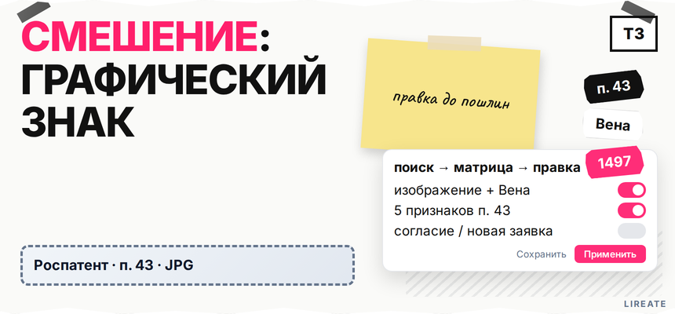
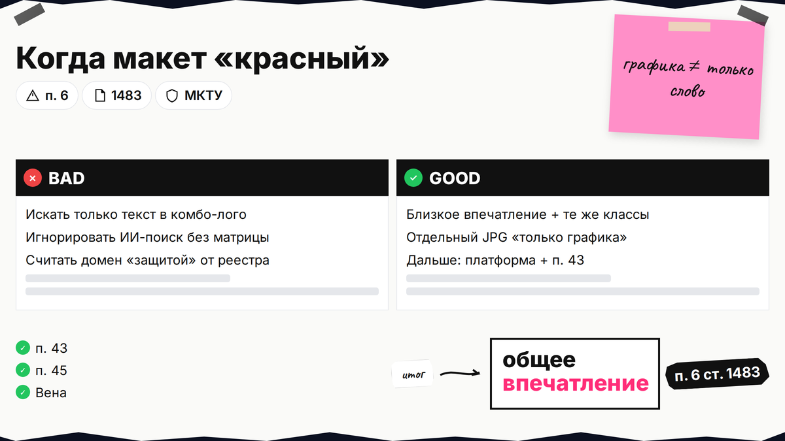
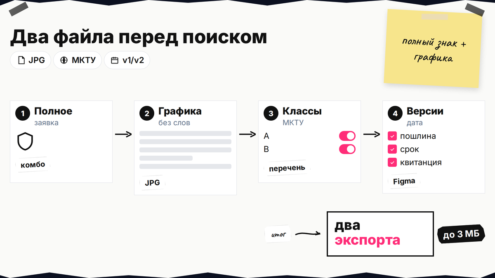
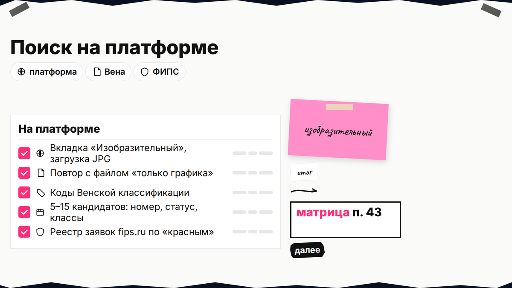

Дизайнер отдал "готовый" логотип, а в Поисковой платформе Роспатента всплыли почти такие же картинки в ваших классах МКТУ. Если не разобраться со сходством изобразительных знаков до пошлин, экспертиза может отказать по п. 6 ст. 1483. Ниже вы загрузите макет в поиск по изображению, пройдёте пять критериев п. 43 Правил № 482, внесёте точечные правки и решите: подавать доработанный знак, запрашивать согласие правообладателя или менять концепцию.

TL;DR / Быстрый инсайт: Графический товарный знак - это картинка (лого, эмблема, пиктограмма), которую сравнивают с чужими знаками по общему зрительному впечатлению, а не по одному пикселю. Бесплатный поиск с 11.12.2023 - на searchplatform.rospatent.gov.ru: вкладка "Изобразительный", загрузка JPG и коды Венской классификации. Роспатент смотрит пять признаков п. 43 (форма, симметрия, смысл, характер изображения, цвет). При риске в однородных классах (п. 45) меняют силуэт, образ или палитру до подачи; смена доминирующей графики = часто новая заявка по ст. 1497.
Сначала общий поиск из чек-листа L01; здесь только графика. Абсолютные риски - в гайде L39. Нормы на 12.11.2026; не консультация поверенного.

Тревожный сигнал - близкое впечатление + те же классы МКТУ + риск путаницы. ИИ-поиск ранжирует кандидатов и не заменяет вывод экспертизы.
Делайте: отличать слабое сходство в далёком классе от "копии" в вашем. Не делайте: игнорировать картинку из-за другого слова в комбинированном лого - для графики нужен отдельный файл. Домен и ник в соцсетях не снимают риск реестра (L38). После отказа - L07.

Для поиска по изображению экспортируйте из Figma, Illustrator или Canva:
Ориентир - JPG/TIFF до 3 МБ; классы МКТУ-13–2026 и свой перечень товаров.
Делайте: версии v1/v2 с датой. Не делайте: искать только текст, если доминирует картинка.

Откройте Поисковую платформу (круглосуточно с 11.12.2023, см. новость ГАРАНТ). Дальше:
Схема до пошлин: два JPG → платформа (изображение + Вена) → список кандидатов → матрица п. 43 → однородность п. 45 → правка макета или согласие → решение о подаче
Делайте: таблицу кандидатов с номерами ФИПС. Не делайте: закрывать тему без матрицы п. 43.
Для изобразительных знаков экспертиза сравнивает признаки по отдельности и в сочетании (п. 43 Правил № 482). Методика близка к Руководству ФИПС 7.1.2.2: важно первое впечатление - "можно перепутать за 2-3 секунды?".
| Признак п. 43 | Вопрос себе | Что менять в макете при совпадении |
|---|---|---|
| Внешняя форма | Силуэт совпадает с чужим знаком? | Изменить контур, пропорции, обводку, убрать "кальку" |
| Симметрия | Та же осевая композиция? | Сместить элементы, сделать асимметрию, другой баланс |
| Смысловое значение | Тот же образ (зверь, гора, буква)? | Заменить метафору: другой объект, другой сюжет |
| Характер (стиль) | Оба "натуралистические" или оба "плоские"? | Сменить стиль: линейный, объёмный, геометрический |
| Цвет и тона | Палитра создаёт тот же эффект? | Новая гамма; для заявки подготовить ч/б вариант |
По п. 41 сходство - ассоциация в целом. Два и более признака п. 43 в однородных товарах - план правок обязателен.
Делайте: строку на каждый опасный номер. Не делайте: верить "процентам успеха" без НПА.
У комбинированного знака - п. 44 и доминанта (размер, центр, контраст).
Делайте: поиск "только графика" + текстовый поиск по слову. Не делайте: списывать иконку со счетов. Абсолютные правки - см. L39; здесь - сходство с чужим знаком.
Даже идеально разные картинки не конфликтуют по п. 6 ст. 1483, если классы МКТУ не пересекаются по смыслу. Однородность - совокупность признаков: род, вид, назначение, каналы сбыта, круг потребителей (п. 45).
Делайте: сравнить перечни; идентификатор на ФИПС при сомнении. Не делайте: полагаться на "соседний" класс без чтения формулировок. Сужение перечня помогает, но не при копии силуэта.
Цель - сместить общее впечатление, а не спрятать знак микросдвигом. Рабочий порядок:
Делайте: привязку правки к признаку п. 43. Не делайте: только смену цвета при совпавшей форме.
| Ситуация | Рекомендуемый шаг | Оговорка |
|---|---|---|
| После правок 0-1 признак п. 43 в однородных классах | Подавать доработанный знак | Сохранить скрины поиска "до/после" |
| Конфликт сохраняется, правообладатель лоялен | Письмо-согласие (п. 46 Правил № 482) | Не для коллективных знаков; без введения в заблуждение |
| Сходство только в части товаров | Сузить перечень МКТУ | Проверить бизнес-план на будущие классы |
| Спорная зона, крупный бренд | Предоценка ФИПС (1 класс, 46 200 ₽) | См. тарифы предоценки (сводка ГАРАНТ) |
| Меняется доминирующая графика или ключевые цвета | Новая заявка (ст. 1497) | "Косметика" в поданной заявке не примут |
Регистрация при сходстве возможна с письмом-согласия правообладателя при отсутствии заблуждения потребителя (п. 46). Согласие собирают до подачи или в ответ на уведомление - не путать с алгоритмом L07 после отказа.
На Лирейт можно обсудить сопровождение регистрации товарного знака: поиск, макет заявки и переписку с экспертизой без обещания положительного решения.
Два JPG → изобразительный поиск и Вена → 5-15 карточек → матрица п. 43 и однородность → правки v2 → повторный поиск → выбор между подачей, согласием, сужением МКТУ, предоценкой или новой концепцией. Не оплачивайте госпошлины, пока "красный" кандидат не разобран по таблице.
Опишите кратко: ваш макет, номера похожих знаков из платформы, классы МКТУ. Подскажем, уместна ли правка или согласие.
Материал проверен: редакция Лирейт, практика проверки изобразительных товарных знаков перед подачей в Роспатент.
Достоверность данных: п. 6 ст. 1483, пп. 40-46 Правил № 482, ст. 1497, Поисковая платформа (11.12.2023) и тариф предоценки 46 200 ₽ сверены с КонсультантПлюс, ГАРАНТ и searchplatform.rospatent.gov.ru на 12.11.2026.
Алгоритм сортирует по близости контуров. Нулевой выдачи ждать не стоит - сужайте список по классам и оценивайте п. 43 вручную.
Да: файл "только графика" плюс текстовый поиск по слову на платформе (L01).
По п. 43: внешняя форма, симметрия, смысловое значение, характер изображения (натуралистическое, стилизованное и т.д.), сочетание цветов и тонов. Их учитывают по отдельности и вместе.
Часто нет: если совпали силуэт и образ, смена палитры может не снять ассоциацию "в целом". Сначала меняйте форму или смысл, затем цвет и повторяйте поиск.
Несущественные правки иногда допускаются, но графическое или смысловое изменение основного изобразительного элемента или ключевых цветов ведёт к ст. 1497 - нужна самостоятельная заявка. До подачи проще и дешевле пройти матрицу из этой статьи.
Это добровольное разрешение правообладателя чужого знака на регистрацию сходного обозначения в согласованных пределах (п. 46). Уместно, когда правки не снимают сходство, но владелец старшего знака не против и нет риска заблуждения потребителей.
Если самопроверка не даёт уверенности: крупный конкурент, спорная однородность, дорогой ребренд. У ФИПС платная предоценка по одному классу - 46 200 ₽ по сводке тарифов ГАРАНТ на дату обращения; это заключение ведомства, а не замена вашего дизайнерского поиска.